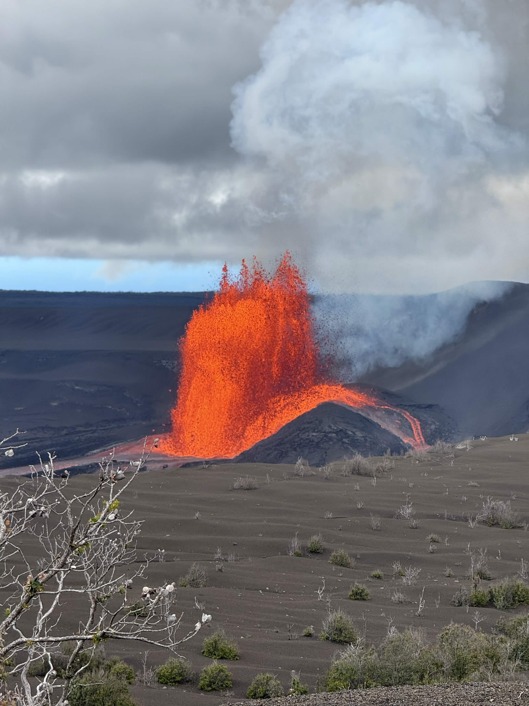

The Zhou Family · July 6–21, 2026 Kauaʻi to the Big Island
Day One · Monday, July 6
Arrival on Kauaʻi
The long way to paradise
Travel day, and it was a long one — a four-hour delay in Denver on top of an already-long haul, and this was right after all three kids had just gotten over COVID the week before. Everyone rallied just in time.
We landed in Lihuʻe around 6:45, grabbed the car, and got settled into our three-bedroom place at Timbers Kauaʻi.
We kept dinner easy and ordered takeout from Hualani’s, the oceanfront restaurant right at the resort. A nice, quiet end to a very long day.
Day Two · Tuesday, July 7
Chocolate, Shave Ice & the Pool
A slow day, and we needed it
The air tour got bumped to Thursday for aircraft maintenance, so today turned into a settle-in and recovery day. We woke up to rain, but it cleared out fast before we left the house — sunny and upper 80s the rest of the day.
BreakfastA big breakfast at Tip Top Café in Lihuʻe. Annabelle had the oxtail soup and gave it a 10 out of 10 — highly recommend.
ChocolateWe stopped at the Lydgate Chocolate Tasting Room in downtown Kapaʻa. The tasting was great — I just wish we could have done the full farm tour so the kids could really see how it’s made. This was fine for now; maybe we’ll do the full thing when we go to Costa Rica later. We bought some chocolate to bring home.
Shave IceA few doors down we found Honu Shave Ice — everyone’s favorite stop of the day. Annabelle got the root beer float one and it was the whole family’s favorite. The piña colada was a little too sweet. Andrew and Adalyn just picked their favorite flavors.
ProvisionsAnnabelle and I did a Costco run to stock the place for the week while Bobby took the little ones back to rest, then got them an early start at the pool.
The PoolWe checked out both pools — the one right outside our room and the infinity pool by the lobby — and the kids liked the one in front of our room best. It was heated and felt great. The keiki jumping rock was the big hit: about an eight-foot jump into five feet of water. Annabelle stayed close to help Andrew get to the side at first, but by the end he was jumping and swimming to the stairs all by himself. Poolside piña coladas and truffle fries didn’t hurt either.
DinnerWe tried Kauaʻi Sushi Station, a food truck. The fish was fresh and the flavor was good, and the salad dressing was great. Honestly it felt a bit pricey for how much you actually got. We’d had a big breakfast plus Costco snacks and the poolside fries, so we skipped lunch and just made this dinner.
Adalyn and Andrew built Andrew a third bed on the floor between their two beds — a pile of pillows with a blanket over it — and that’s where he insisted on sleeping tonight.
Day Three · Wednesday, July 8
Na Pali by Catamaran
Dolphins at dawn, choppy seas, and a pasta rescue
Our big day on the water with Blue Dolphin — a Na Pali Coast catamaran and snorkel tour. An honest mixed bag, but with a real highlight tucked into the morning.
The dolphinsOn the way up the coast we came across a pod of spinner dolphins — probably thirty or more. Apparently they sleep near the shoreline overnight, and in the morning the crew knows right where to find them. One even gave us a couple of jumps and spins in the air. It was Annabelle and Andrew’s first time seeing dolphins in the wild, and it was the best part of the day.
The rideThe boat ride was choppy the whole way up the coast, and we were seated on the wrong side — couldn’t really see the sights the guide was pointing out. Both of the little ones got seasick. We’d given them Dramamine 45 minutes before getting in the water, but I think the combination of the meds making them tired and watching a lot of other people get sick didn’t help. Bobby thinks it was the cinnamon rolls and fruit they had for breakfast on the boat; I think it was the ride itself. Who knows! Andrew heaved about ten minutes before we docked, so close to the end.
A small revelationOne genuinely valuable thing: watching the horizon and keeping his eyes on a fixed point on the coastline made a real difference for Bobby. He usually gets pretty seasick, and while he didn’t feel great today, he did much better than on past boat trips. A good trick to remember.
The snorkelingHonestly, mid. The snorkel portion was only about an hour (a little less, with getting in and out), the water was cloudy, and what coral we could see looked pretty unhealthy. Some fish. We didn’t get to do the slide — not enough time. But the real win: we got all three kids in the water and snorkeling again. Grand Cayman was their first time, so a second round was a bit stressful for all of us and they were hesitant at first — but they each did it pretty seamlessly. It felt good to be building that skill.
The turnaroundBack at the hotel we jumped straight in the pool — forty-five minutes of whole-family fun that reset the whole day. Everyone showered up, worn out but in good spirits, and absolutely starving.
DinnerBlue Wave Sushi was great — a true sushi spot with premium quality. Adalyn didn’t eat, though, so on the way home I stopped at Safeway and picked up noodles, a jar of sauce, and hamburger to make pasta for her back at the residence. Everyone ended up having a little, and it turned out great.
DessertBefore the pasta we’d stopped at Skinny Mike’s for ice cream. It was okay — not as good as the place we went the other day.
Sea legsThe funniest part came after: hours back on dry land and we all still felt like the ground was moving. The kids got a real kick out of it.
Wind-downWe wrapped the night with a movie night and made it through the first half of Grease before calling it.
A footnote to a long day: Annabelle knocked out her PE final from the room in the evening. Online school from a beach in Kauaʻi.
Day Four · Thursday, July 9
A Slow Morning and the Air Tour
Homemade breakfast, a coastal walk, and rainbows from above
A gentle, unhurried day at our own pace — and honestly one of the loveliest so far. We stayed close to the resort in the morning and saved the big highlight, the rescheduled air tour, for the afternoon.
Breakfast, made by the kidsThe morning started with the kids taking over the kitchen. Adalyn made us sourdough bread with butter, and Annabelle put together homemade açaí bowls with everything we’d picked up at Costco. A really nice, slow start.
A walk along the coastAfter we got ready we tried to check out the resort bikes, but they weren’t in great shape — the kid stroller attachment was missing and there weren’t quite enough — so we scrapped that and just walked instead. We strolled the coast down past the lighthouse all the way to Duke’s for lunch. It was beautiful inside. Adalyn and I shared the kalbi ribs and teriyaki chicken, Annabelle had the fish tacos, Andrew had a cheeseburger, and Bobby got the ribs and chicken too.
The tree, the pool, and a napAfter lunch we walked back down through the Marriott property and circled up to our hotel. Adalyn spotted a really cool tree and wanted to climb it, and all three kids gave it a go — it was slippery so they couldn’t get too far, but they did great. Back at the hotel, Bobby took Adalyn and Andrew to the pool while Annabelle and I laid in bed, watched an episode of Grey’s Anatomy, and took a nap. Bobby woke us up when it was time to head to the airport.
The air tourOur rescheduled Air Ventures flight over Kauaʻi — nice, and a beautiful way to see the island from above after seeing it by land and sea.
In Adalyn’s words (age 8, the day before her birthday): “I thought the airplane ride was a little bumpy, but really fun. We saw a lot of rainbows and that was my favorite part. There’s a lot of mountains formed from volcanoes.”
The car swapAfter the flight we stopped by the airport and exchanged our rental — we’d found cockroaches in it (including a couple in Andrew’s water bottle lid). The replacement is a smaller vehicle, but that’s fine: we all fit, and it’s roach-free.
Dinner — two triesWe tried Hamura Saimin for the local saimin, and… the noodles were horrible. So bad we didn’t even finish. Annabelle came to the rescue and found Big Monster Sushi & Thai instead, and it saved the night. We started with crab wontons and fried tofu, then had the basil fried rice, drunken noodles, and Thai fried rice — all really good.
Wind-downBack at the house we were pretty worn out, so everyone showered and hit the hay.
Day Five · Friday, July 10
Tunnels Beach & the Sandcastle Masters
Rain the whole way, sunshine in the water
We woke to rain but decided to chance Tunnels Beach on the North Shore anyway — about an hour and a half drive. Traffic wasn’t bad, but it rained the entire way there.
Finding itParking was a bit of a guessing game. There were a few side streets we thought might be it but weren’t sure about, so we kept going and eventually reached the actual lot — and got a spot fairly quickly. The rain was letting up, so we grabbed just our snorkel gear and left the towels in the car. We had to trek along the beach about five minutes because where we’d landed was a no-swimming zone.
The waterThe kids wanted to get straight to their sandcastle, so Bobby and I took turns in the water while the other watched them. We both snorkeled the reef and it was really good — lots and lots of fish, though the coral was mostly dead (a couple of cool ones still). Bobby spotted a tiny half-inch crab. I managed to talk Adalyn into snorkeling too — she wanted to see what all the rave was about — and she absolutely loved the fish. She and I swam out to the edge of the reef, saw where it dropped off, then turned and swam back to shore. We’d left our phones behind for fear of the rain, but it never actually rained while we were in the water — just a few sprinkles.
Sandcastle engineeringAndrew got buried in the sand, and the kids’ sandcastle was immaculate — so many tunnels running around and through into other castles. Master sculptors, the lot of them.
Heading backWe figured we should wrap up, though we had no idea what time it was — totally taking a shot. Turned out we got back to the car around 12:50. We rinsed off, hit the road, and stopped for lunch in the little town near Mark Zuckerberg’s property at Hawaiian Boba BBQ — pretty good — then drove the rest of the way home.
Getting readyBack home I double-checked the time and realized we didn’t actually need to be there until five — which gave us more breathing room to get ready than I’d thought (and we needed it). I had time to curl Adalyn’s hair, and only dried mine and Annabelle’s, but that was fine.
The Smith Family Garden LuauWhen we arrived we waited in line for the little tram that takes you around the gardens — flowers and fruit everywhere, and a truly crazy number of chickens, peacocks, ducks, and birds. The kids had bought a bag of bird feed at the entrance and were thrilled to toss it to the birds and into the ponds. After the tram we had time to walk the gardens a bit and snap a few pictures; Annabelle loved all the flowers.
The imu ceremonyWe watched the imu ceremony where they pulled the roast pig out of the ground — really cool to see. Then it was dinner: we had an assigned table (so helpful), and the food was pretty good. The pork was our favorite, and Adalyn really liked the fried rice. We had dessert and drinks, then headed over to the outdoor theater for the fire show.
The showThe show was pretty good — hula dancing, then a fire show to close it out. You could tell it was a family-run production; there were definitely performers still learning, but it captured the essence of aloha, and that’s what mattered. The kids enjoyed it, and their favorite was the fire finale — Andrew especially loved the part where the performer ate the fire and juggled it with his feet while lying on his back.
Day Six · Saturday, July 11
Mountain Tubing
Floating through 150 years of history
Our Kauaʻi Backcountry mountain tubing day — and honestly, a 10 out of 10 all around. Easily one of the family favorites.
The morningA slow start: we finished Grease and had breakfast in the residence. For lunch we went back to Tip Top Café for more of that oxtail soup — just as good the second time, though they were sold out of fried rice. Then off to the tubing company.
The floatAfter checking in, a 4x4 took us deep into the island’s private interior, up toward the base of Mount Waiʻaleʻale, to a spot you simply can’t reach any other way. From there we dropped into a gently flowing ditch with our tubes, helmets, and headlamps, and floated down through open canals and long, dark hand-carved tunnels. Low effort, high reward — the kind of thing everyone loved.
The historyWhat made it more than just a float: we were drifting through a roughly 150-year-old irrigation system built for the old Lihuʻe Sugar Plantation, established in 1849. Mount Waiʻaleʻale above us is one of the wettest places on Earth — some 450 inches of rain a year — and plantation laborers hand-dug miles of ditches and carved tunnels straight through the mountain rock to channel all that water down to the cane fields. The plantation closed in November 2000 after about 150 years, ending Kauaʻi’s sugar era, and the ditches were eventually reborn as this tubing route. So those dark tunnels we floated through were carved by hand more than a century ago. Living history, at drifting speed.
Annabelle’s winAnnabelle had been nervous about it the night before, but she ended up loving it — it was basically a lazy river, gentle and easy the whole way. A good reminder that the thing you’re anxious about often turns out to be the best part.
A note for next timeAt the end of the road, just before the private property entrance, there was a little smoothie and banana bread stand we spotted — one to swing back to before we leave the island.
Back at the resortAfter tubing we came back and spent a good while playing at the pool, then had dinner at Hualani’s — the resort restaurant we’d gotten takeout from the first night. This time we actually dined in.
A birthday-eve runAfter dinner, Annabelle and I slipped out to Target to pick up decorating supplies for Adalyn’s birthday. Annabelle also snagged a couple of swimsuit tops on clearance, and we browsed the LoveShackFancy things — though it was already pretty picked over.
Day Seven · Sunday, July 12
Waimea Canyon Drive
Smoothies, an ant ambush, and the Grand Canyon of the Pacific
Our big canyon road-trip day — the “Grand Canyon of the Pacific” — and we kicked it off at that smoothie stand up near the tubing drop-in we’d spotted the day before.
SmoothiesThere was a wait, but it was well worth it. Annabelle and Andrew got white pineapple smoothies, Bobby had mango pineapple, I had watermelon pineapple, and Adalyn tried the cane sugar drink — which she loved. We also grabbed a whole white pineapple to take home. I cut the top off before putting it in the car and… ants everywhere. We eventually got most of them off with a paper towel and some bottled water.
LunchWe’d planned to try Koloa Fish Market, but it was closed on Sunday, so we ate at a little grill place next door in a big red building. I had a pulled pork sandwich, Annabelle a cheeseburger, Adalyn a California burrito, and Bobby some carne asada fries and tots. Andrew shared with me. The food was pretty good — no complaints.
Up the canyonThen we headed up for the audio tour. First stop was the coffee farm — we sampled the coffee, looked around, then got back in the car and climbed the canyon. Amazing views on the way up. It started to rain, but we didn’t let that stop us — we trucked on.
A little hikeWe missed the first hike, so we stopped at the second. The trailhead board listed a few options — a half mile, an eight-tenths, and a mile-and-a-half out-and-back. We figured we’d just do the half mile, but as we started walking it was clear we’d missed it or gotten turned around. So Annabelle, Andrew, and I turned back while Bobby and Adalyn pressed on — they said they walked about five more minutes before reaching the view. We think that was the eight-tenths-of-a-mile one.
The muddy comedyIt was raining hard and the trail turned into a slick, muddy mess — genuinely hard to stay upright. We were cracking up trying not to hit the ground. Meanwhile Andrew’s tummy was hurting badly — he needed a restroom and was in a real hurry to get back. I was still trying to climb the hill when Annabelle said she’d take them ahead, so they carried on without me. Next thing I know, I come around the corner and what do I see… Annabelle holding Andrew in a full squatting position. I about lost it. (I ended up wiping him with leaves on the trail, and we hit the real restroom back at the trailhead.)
The topAfter the long hike we kept climbing toward the Na Pali overlooks, but it was raining so hard we didn’t get to see much up there. We did catch a nice waterfall and the canyon views earlier in the drive. We were pretty soaked by the top, but we had fun anyway. The Shaka Guide app was worth every penny — it added so much richness, and we loved all the stories and legends about the island.
Dinner & the red-dirt battleBack down the mountain we returned to Big Monster for dinner again — their crab rangoons are the best we’ve ever had. Home, showers, and then the final laundry push: everything got washed, including the shoes, which were so caked in mud they needed a machine wash, a scrub with a washcloth, and another wash. Annabelle’s probably still need bleach. So much red dirt.
Birthday eveOnce the kids were asleep, I did a little decorating for Adalyn — a banner and a light-pink door streamer spilling out of her room — and wrapped nine presents for her to open at different points throughout her birthday. She absolutely loved it when she woke up. I rounded out the night with some pre-packing and finished the rest in the morning, since we’d be hopping to the Big Island the next day.
Day Eight · Monday, July 13
Adalyn Turns Nine + Island Hop to Hilo
A birthday on the move
Adalyn’s ninth birthday — and travel day to the Big Island. We spread her presents out across the day: two in the morning, one at lunch, one at the airport, and more to come. A birthday on the move.
Last Kauai morningWe had breakfast at the residence (a fridge clean-out) and finished packing. Then a few errands: Costco to get Bobby’s glasses repaired (a new nose pad), Target for some exchanges, and cake pops from Starbucks for the kids.
A detour lunchWe’d planned to try Koloa Fish Market again and maybe catch the turtles, but there was an accident on the way, so we turned the opposite direction and tried E Ala Cafe instead — and it was great. The kids had avocado toast, I had the smoked salmon bagel, and Bobby had a breakfast burrito. All of it was excellent. Since we were near Honu Shave Ice again, we swung back for a snack — Andrew and Adalyn got rainbow, and Bobby and Annabelle went for the root beer one again.
To the airportThen off to the airport for the island hop. We grabbed Starbucks drinks on the way, figuring there’d be no drink service — a very good call. The first flight to Honolulu was smooth and easy (19 minutes wheels-up to wheels-down!). Adalyn opened her fifth gift while we boarded the second hop to Hilo — stickers, a kid classic.
More to come — arriving on the Big Island, plus Tuesday’s volcano day…
Day Ten · Wednesday, July 15
Chasing the Fountain
We threw out the plan for a 900-foot lava fountain
This is the day. If this whole trip had a heart, it beat today. It was supposed to be a mellow waterfalls-and-stargazing day — but Kīlauea woke up and started fountaining, and some opportunities you simply do not pass up. So we tore up the plan, no hesitation, and chased the volcano.
Slow startWe slept in — blissfully. Bobby and the kids went down for breakfast and caught the wild finish of the Argentina vs. England match (Argentina, on a heart-stopping ending). They came back up buzzing, we spread out the day’s options … and then the word came that the volcano was really going. That settled it.
The decisionKīlauea was fountaining — actively, dramatically. Waterfalls could wait. Mauna Kea could wait. You do not get a second chance at an erupting volcano. We pointed the car at the park and went.
The trafficOf course, every other soul on the island had the exact same thought. Bumper-to-bumper, nearly an hour of crawling — but nobody complained. You could feel the anticipation building in the car the closer we got.
The fountainWe parked near the old military cottages and hiked about forty minutes up to the overlook. And then — there it was. Kīlauea, throwing molten lava roughly 900 feet into the sky. Nine. Hundred. Feet. A living, roaring column of fire and earth, spatter arcing through the air, a wall of gas billowing up over it all. We just stood there. This is the thing you plan an entire trip around hoping to maybe catch a distant glow of — and instead the mountain put on the show of a lifetime, right in front of our eyes, with all three kids watching the planet quite literally being born. Genuinely once-in-a-lifetime. I don’t think any of us will ever forget standing there.

Kīlauea fountaining ~900 feet — Wednesday, July 15, 2026
DinnerAfter hiking back down to the car, we headed to dinner at Kaleo’s.
Mauna Kea after allAnd then — because apparently one wonder of the world wasn’t enough for a single day — we drove up to the Mauna Kea Visitor Station for stargazing. Classic me: I’d packed everything this morning except my own pants, so I bought a pair right there at the visitor center at 8:15 (you can’t make it up). Then one of the workers, Nate, gave a free talk under the stars and pointed out everything in the night sky — constellations, planets, the whole sweep of it. From a 900-foot lava fountain by day to a sky full of stars by night. What a thing.
Wind-downBack at the hotel: cookies for the kids, showers all around, the little ones down. Annabelle and I watched a couple episodes of Grey’s and finally called it. I keep thinking about that fountain. What a day — maybe the day. The one we’ll tell people about for the rest of our lives.
Day Twelve · Friday, July 17
Discovering the Resort
A morning of exploring, and the Kona pool waterslide
A slow, easy Kona day — the kind we needed. We’d meant to have breakfast at the Water’s Edge next to the hotel, but by the time we were ready it was 10:20 and breakfast had stopped at 10. So the kids and I (Bobby was still sleeping and getting ready back in the room) set off on foot to explore the resort for the first time.
The walkThe Hilton Waikoloa is huge, and wandering it was half the fun. We found an amazing lagoon with kayaking and a waterfall, then continued along the path and came to Dolphin Quest, where the dolphins live — we inquired about swimming with them ($295 per person for 30 minutes, noted!). The path wound along the coast until we reached the Kona Pool.
Poolside lunchWe grabbed some seats and hit the little pool-side eatery: the kids got ice cream and banana bread, I had a poke bowl. As we were finishing, Bobby found us — he went in and grabbed a pizza, and while he waited for it the kids and I jumped in to swim.
The Kona poolThat pool is enormous, with a little keiki area, a hot tub, a rock in the middle for jumping, and — the highlight — a long waterslide at the far end. All four of us went down it. So much fun. Afterward we made our way back to Bobby, who was just finishing his pizza.